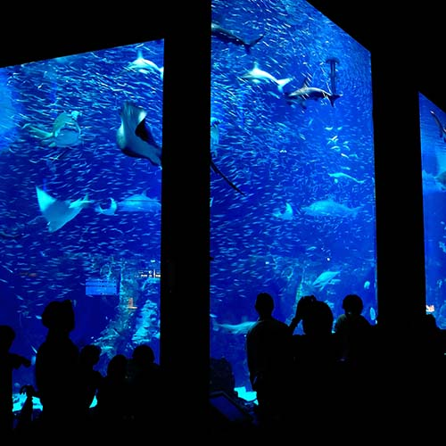

N水族館とは？
 N水族館は、VR・AR・プロジェクションマッピング・モーションキャプチャーなどの最先端技術を取り入れ、ネットとリアルを融合させた次世代の水族館です。展示面積は世界最大規模で、さまざまな海の魚や海の動物達を間近で見ることができます。大迫力の巨大水槽や、独自の特殊効果を取り入れたイルカのショーなど、子供から大人まで楽しめる施設になっています。
N水族館は、VR・AR・プロジェクションマッピング・モーションキャプチャーなどの最先端技術を取り入れ、ネットとリアルを融合させた次世代の水族館です。展示面積は世界最大規模で、さまざまな海の魚や海の動物達を間近で見ることができます。大迫力の巨大水槽や、独自の特殊効果を取り入れたイルカのショーなど、子供から大人まで楽しめる施設になっています。
海の中にいこう！
用意されたVR HMD（ヘッドマウントディスプレイ）をかぶると、まるで巨大水槽のど真ん中にいるかのような状況が再現されます。モーションキャプチャーによってお客様の動きを読み取り、巨大水槽の中を自由に動き回ることが可能です。また時間帯によっては魚たちに餌付け体験が出来たり、お客様同士でゲームを楽しむことも出来ます。
お家でイルカのショー？
 イルカのショーには、人間ではなくN水族館オリジナルのバーチャルキャストが登場します。また、手元のスマートフォンからコメントやアクションを送信すると、リアルタイムに演出に反映され、インタラクティブなイルカショーを楽しむことができます。音楽や照明などの演出は毎回ランダムに生成されるため、見るたびに違う内容が上映されます。
イルカのショーには、人間ではなくN水族館オリジナルのバーチャルキャストが登場します。また、手元のスマートフォンからコメントやアクションを送信すると、リアルタイムに演出に反映され、インタラクティブなイルカショーを楽しむことができます。音楽や照明などの演出は毎回ランダムに生成されるため、見るたびに違う内容が上映されます。